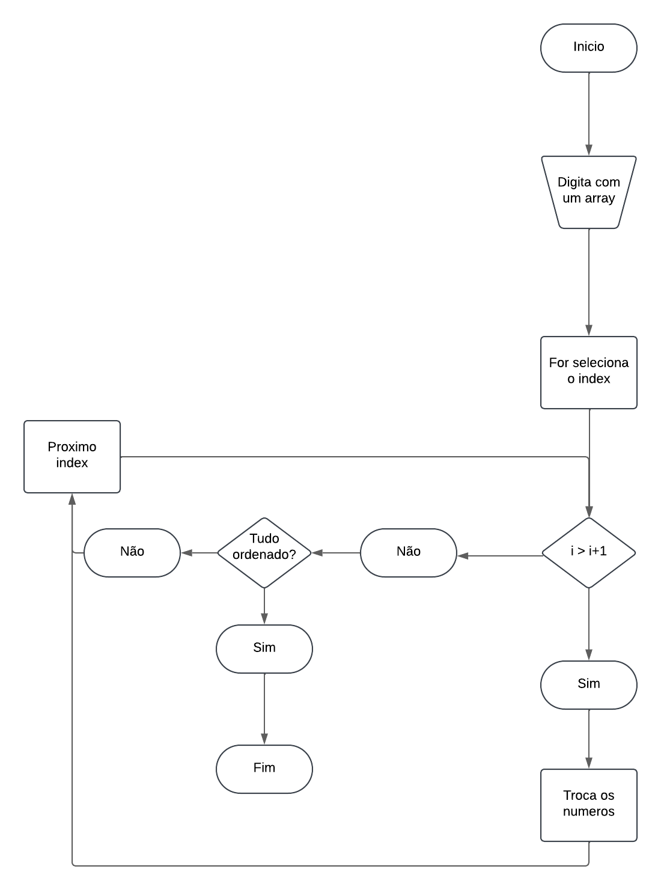

Fluxograma
Simbolismo
Eles são usados para representar processos e fluxos de trabalho de forma visual,
facilitando a compreensão de como o trabalho é realizado.
EM fluxograma, bubble sort, insertion e selection sort
Bubble sort
Insertion sort

Selection sort

algorítmicos de par e impar

Exemplo de software para fluxograma:
O Lucidchart é uma ferramenta online de diagramação
que permite criar diagramas, fluxogramas, mapas de processos, mockups,
diagramas UML e mapas de jornada do cliente.